{kind=link}

Figure 52.- Helicopter performance is reduced at high
elevations.
- Density altitude (air density)
- Gross weight
- Wind velocity during takeoff, hovering, and landing
Air, like liquids and other gases, is a fluid. Because
it is a fluid, it flows and changes shape under pressure. Air is said to
be "thin" at high altitudes; that is, there are fewer molecules
per cubic foot of air at 10,000 feet than at sea level. The air at sea level
is "thin" when compared to air compressed to 30 pounds of pressure
in an automobile tire. A cubic inch of air compressed in an automobile tire
is denser than a cubic inch of "free" air at sea level.
For example, in a stack of blankets, the bottom
blanket is under pressure of all blankets above it. As a result of this
pressure, the bottom blanket may be squeezed down until it is only one-tenth
as bulky as the fluffy blanket on top. There is still just as much wool in
the bottom blanket as there is in the one on top, but the wool in the bottom
blanket is 10 times more dense. If the second blanket from the bottom of the
stack were removed, a force of 15 pounds might be required to pull it out.
The second blanket from the top may require only 1 pound of force. In the
same way, air layers near the earth's surface have much greater density than
air layers at higher altitudes. The lower the elevation of the earth's
surface, the greater the density of the air layers. For example, the layer
of air at sea level would be denser than the layer of air at the earth's
surface at Denver, Colo., at approximately 1 mile above sea level.
The above principle may be applied in flying aircraft.
At lower levels the rotor blade is cutting through more and denser
air, which offers more support (lift) and increases air resistance. The
same amount of power, applied at higher altitudes where the air is
thinner and less dense, propel the helicopter faster.
Density altitude refers to a theoretical air density which exists under standard conditions of a given altitude. Standard conditions at sea level are:
Atmospheric pressure - 29.92 in. of Hg (inches of mercury)Standard conditions at any higher altitude are based on:
Temperature - 59° F. (15° C.)
Atmospheric pressure (reduced to sea level) - 29.92 in. of Hg
Temperature - 59° F. (15° C.) minus 3½° F. (2° C.) per 1,000 feet elevation
For example, if the atmospheric pressure (reduced to
sea level) at an airport located 5,000 feet above sea level is 29.92 inches
of mercury and the temperature is 59°-(3.5° X 5) = 41.5° F.
(5° C.), the air density is standard at that altitude. (The actual
barometric pressure at an elevation of 5,000 feet under these conditions
would be approximately 24.92 inches of mercury since atmospheric pressure
decreases approximately 1 inch per 1,000 - foot increase in altitude. The
average temperature decrease per 1,000 - foot increase in altitude is
3.5° F.).
Figure 51 shows a
density altitude chart. If we locate the +5° vertical line along the
bottom of the chart, follow this line up to its intersection with the
5,000-foot diagonal line, then follow the horizontal line to the left side
of the chart, we read a density altitude of 5,000 feet.
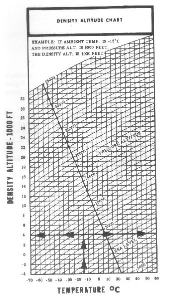
Figure 51.- Density altitude chart.
The four factors which affect density altitude are altitude, atmospheric pressure, temperature, and moisture content of the air.
Figure 52.- Helicopter performance is reduced at high
elevations.
Altitude
We have already seen the effects of altitude on air density in the first section of this chapter. The greater the elevation of an airport or landing area, the less the atmospheric pressure and, consequently, the less dense the air. The less dense the air, the greater the density altitude. What is the result when operating at a high density altitude? Helicopter performance is decreased (fig, 52). It can be seen from the density altitude chart that, as altitude increases, density altitude increases.
The atmospheric pressure at an airport or landing
area at a given elevation can change from day to day - sometimes a very
noticeable amount which, when combined with other factors, could be
significant. The lower the pressure at a given elevation, the less dense
the air; the less dense the air, the higher the density altitude and, as
a result, the less performance the helicopter will have.
The daily and seasonal variations in atmospheric
pressure at a given place will not have as significant effect on the
density altitude as the daily and seasonal variations of temperature
and moisture.
The density altitude chart is based on pressure
altitude, not indicated altitude (fig. 51)
. To determine the pressure altitude at any given place, if an
altimeter is available, adjust the altimeter setting to 29.92 and read the
pressure altitude directly from the altimeter. However, do not forget to
reset the altimeter to the current altimeter setting if available, or to
field elevation if an altimeter setting is not available.
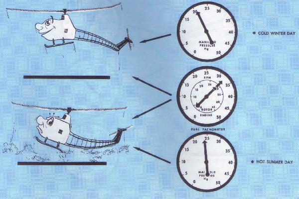
Figure 53.- High temperature reduces helicopter
performance.
Even when elevation and pressure remain constant,
great changes in air density will be caused by temperature changes. The
same amount of air that occupies 1 cubic inch at a low temperature will
expand and occupy 2, 3, or 4 cubic inches as the temperature rises.
Therefore, as temperature increases, air becomes less dense, density
altitude is increased, and the helicopter performance decreases
(fig. 53). A study of figure
51 easily reveals that, as temperature
increases, density altitude increases since the pressure altitude lines
slope upward to the right.
We have already used the density altitude chart to
find the density altitude at an elevation of 5,000 feet standard
atmospheric conditions for that elevation - that is, atmospheric pressure
(reduced to sea level) 29.92 inches of mercury, temperature 41.5° F.
(5° C.).
When the atmospheric pressure, reduced to sea level at
a given elevation, is 29.92, the pressure altitude is
the same as the given elevation.
What would be the density altitude at this same
elevation if the pressure altitude is still 5,000 feet but the temperature
is 95° F. (35° C.)? Locate the 35° vertical line at the bottom
of the chart (fig. 51), follow this
line up to its intersection with the 5,000-foot pressure altitude
(diagonal) line, then move horizontally to the left side of the chart
where a density altitude of 8,400 feet is read. A helicopter operating at
this elevation under these conditions would be flying in air with a
density altitude equivalent to that at the 8,400-foot level. Therefore,
the performance of the helicopter would be as though it were flying at the
8,400-foot level rather than the 5,000-foot level.
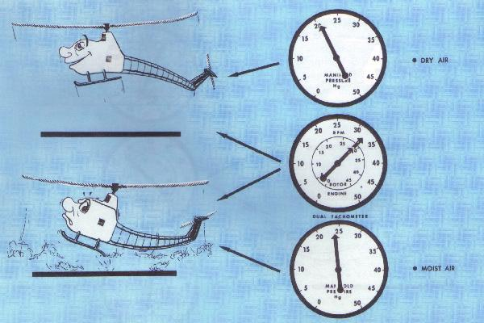
Figure 54.- High humidity (especially on hot days)
reduces helicopter performance.
When temperature and pressure are constant, changes in
the moisture content of the air will change air density. Water vapor weighs
less than dry air. Therefore, as the moisture content of the air increases,
air becomes less dense; density altitude is increased with a resultant
decrease in helicopter performance (fig. 54)
. The higher the temperature the greater the amount of moisture the
air can hold. Relative humidity, which is expressed as a percent, is
the ratio of the amount of moisture in the air to the amount it is capable
of absorbing at a given temperature. The moisture content of the air at a
relative humidity of 80 percent and a temperature of 100° F. will be
much greater than with a relative humidity of 80 percent and a temperature
of 50° F. The greatest in air density (increase in density altitude)
due to moisture content will be at a high temperature.
The density altitude chart
(fig. 51) does not take
the moisture content of the air into consideration. It should be
remembered that the actual density altitude can be much higher than that
computed from this chart if the air contains a high moisture content.
The importance of this added effect of moisture will be seen shortly.
High density and low density altitude conditions
The terms "high density altitude"
and "low density altitude" should be thoroughly understood. In
general, high density altitude refers to thin air; low density altitude
refers to dense air. Therefore, those conditions that result in thin
air - high elevations, high temperatures, high moisture content, or some
combination thereof - would be referred to as high density altitude
conditions; those conditions that result in dense air - low elevations,
low temperatures, low moisture content, or some combination thereof - would
be referred to as low density altitude conditions. It is important to note
that high density altitude may be present at low elevations on hot days
with moisture content in the air.
High elevations, high temperatures, and high moisture content, all of which contribute to a high density altitude condition, lessen helicopter performance. Because the difference between the power available and the power required is so small for a helicopter, particularly in hovering flight, density altitude is of even greater importance to the helicopter pilot than it is to the airplane pilot. Helicopter performance is reduced because the thinner air at high density altitudes reduces the amount of lift of the rotor blades. Also, the (unsupercharged) engine does not develop as much power because of the thinner air and the decreased atmospheric pressure.
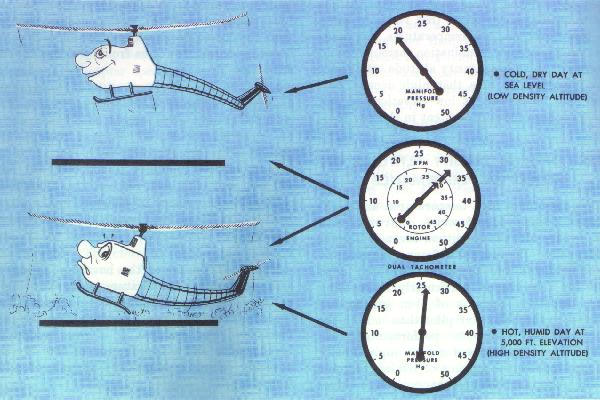
Figure 55.- High density altitudes reduce helicopter
performance.
High density altitudes reduce the hovering capabilities of the helicopter (fig. 55) . Under any given load condition, the higher the density altitude, the lower the hovering ceiling; that is, the elevation at which the helicopter will be able to hover will be lowered as the density altitude increases.
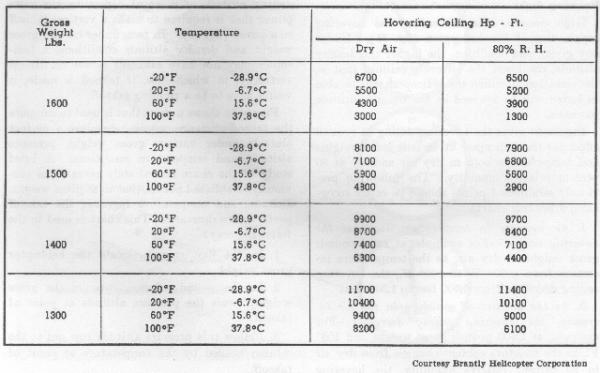
Figure 56.- Hovering ceiling (in ground effect) chart.
Figure 56
gives the hovering ceiling in ground effect for one helicopter at various
gross weights and temperatures both in dry air and air at 80 percent
relative humidity. The following previously established points should be
easily recognized from this chart:
1. An increase in temperature decreases the
hovering ceiling. - For example, at 1,600 pounds gross weight in dry
air, as the temperature increases from -20° F. to 100° F., the
hovering ceiling decreases from 6,500 feet to 1,300 feet.
2. As the amount of moisture in the air increases,
the hovering ceiling decreases. - For example, at 1,600 pounds gross
weight and 100° F., as the moisture content changes from dry air to
80 percent relative humidity, the hovering ceiling decreases from 3,000
feet to 1,300 feet; at 1,600 pounds and 20° F., as the moisture changes
from dry air to 80 percent relative humidity, the hovering ceiling
decreases from 5,500 feet to only 5,200 feet.
3. The higher the temperature, the greater the
amount of moisture which the air can hold. - At 1,600 pounds gross
weight, and temperatures of -20° F., 20° F., 60° F., and
100° F., the change in hovering ceiling from dry air to 80 percent
relative humidity is 200 feet, 300 feet, 400 feet, and 1,700 feet,
respectively. This indicates that the amount of moisture in the air at
100° F. and 80 percent relative humidity is much greater than the
amount present at 60° F. and below.
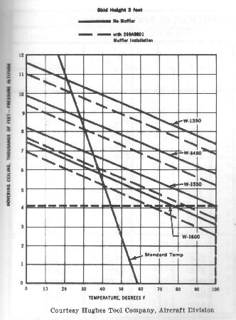
Figure 57.- Hovering ceiling (in ground effect) chart.
Figure 57 illustrates the hovering ceiling in ground effect for temperature and gross weight variations for one helicopter, but does not reflect the effect that moisture content has on the performance. For example, at a gross weight of 1,550 pounds and a temperature of 100° F., the hovering ceiling is a pressure altitude of 4,100 feet.
Takeoff
For any given gross weight, the higher the density altitude at point of departure, the more power that is required to make a vertical takeoff to a hover (fig. 55) . In fact, under certain gross weight and density altitude conditions, a helicopter may not have sufficient power to lift off vertically, in which case, if takeoff is made, it would have to be a running takeoff.
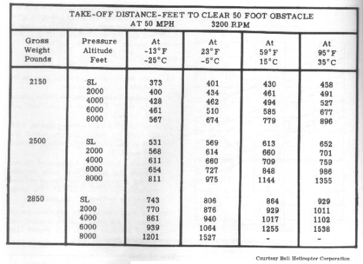
Figure 58.- Takeoff distance chart.
Figure 58 shows a
chart that is used to compute the takeoff distance required to clear a
50-foot obstacle under various gross weight, pressure altitude, and
temperature conditions. A brief study of the chart immediately reveals the
previously established points, that is, as gross weight, altitude, and
temperature increase, the takeoff performance decreases. This chart is used
in the following way:
1. In the first column, locate the helicopter gross
weight.
2. In the second column, opposite the gross weight,
locate the pressure altitude at point of takeoff.
3. Follow this pressure altitude row out to the column
headed by the temperature at point of takeoff.
4. The figure at the intersection of the pressure
altitude row and the temperature column is the number of feet required for
this particular helicopter to take off and clear a 50-foot obstacle.
5. If the gross weight, pressure altitude, or
temperature, or any combination of the three, fall between the listed
values, the interpolation process will have to be used to compute the
distance.
Sample Problem 1. - What distance is required to clear a 50-foot obstacle if the helicopter gross weight is 2,500 pounds, the pressure altitude is 6,000 feet, and the temperature is 59° F.?
SSOLUTION:
| 1. | In the first column, locate 2,500. |
| 2. | In the second column opposite 2,500, locate 6,000. |
| 3. | Follow this 6,000 row out to the column headed by 59° F> where you read 848. |
| 4. | The distance required to clear a 50-foot obstacle under these conditions then is 848 feet. |
Sample Problem 2. - What distance is required to clear a 50-foot obstacle if the helicopter gross weight is 2,850 pounds, the pressure altitude is 5,000 feet, and the temperature is 95° F.? The solution requires interpolation.
SSOLUTION:
| 1. | In the first column, locate 2,850. |
| 2. | In the second column opposite 2,850, locate the 4,000 and 6,000-foot rows. |
| 3. | Follow each of these rows out to the column headed by 95° F., where you read 1,102 and 1,538 respectively. |
| 4. | Since 5,000 feet falls midway between 4,000 and 6,000, we assume that the takeoff distance falls midway between 1,102 and 1,538. |
| 5. | By taking half of the difference of the two distances and adding it to 1,102 (or subtracting it from 1,538), the distance required to clear a 50-foot obstacle under the conditions of the problem is 1,320 feet. |
Since this chart does not take into consideration the decrease in air density due to moisture content, takeoff distances may be even greater than those computed from the table.
For any given gross weight, the higher the density altitude, the less the rate of climb for any helicopter. Although a helicopter may be able to take off and clear obstacles close by, higher obstacles farther away may not be cleared because of this reduced rate of climb.
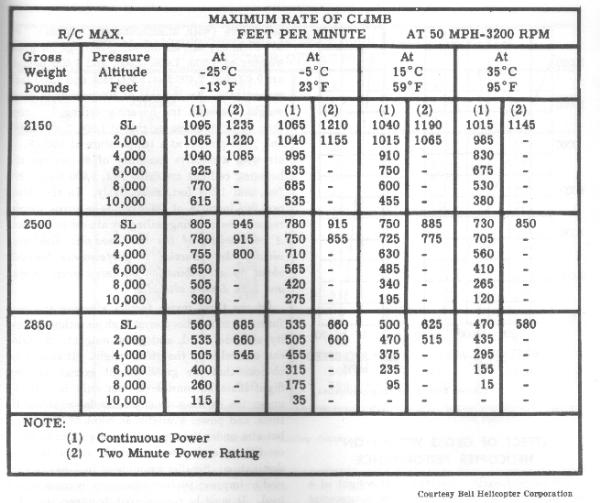
Figure 59.- Maximum rate of climb chart.
Figure 59 illustrates the type of chart that is used to compute the rate of climb for one model of helicopter. The steps for using this chart are exactly the same as those listed previously for takeoff distance chart.
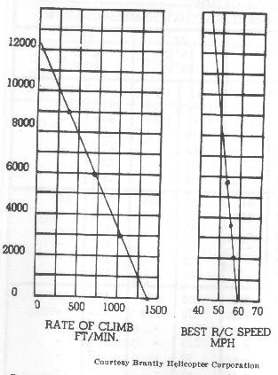
Figure 60.- Rate of climb and best rate of climb speed
chart.
Figure 60
illustrates another type of chart used to compute rate of climb for another
model helicopter. To use this chart, you must follow these steps:
1. Compute the density altitude at the departure point
using the density altitude chart
(figure 51).
2. Locate this density altitude along the left side of
the chart (figure 60).
3. Follow this altitude line horizontally until it
intersects the diagonal line.
4. From this point of intersection, move vertically
downward to the bottom of the chart where you read the rate of climb
under existing conditions.
From the chart to the right in figure 60, you can determine the best rate of climb airspeed under the various density altitude conditions. From the density altitude at the left side of the chart, move horizontally across until the line intersects the diagonal line on the right-hand chart. From this point of intersection, move vertically downward to the bottom of the chart where you read the best rate of climb speed in miles per hour.
Landing
Because a pilot can hover at a takeoff point with a
certain gross weight, it does not mean that hovering power will be
available at the destination airport. If the destination is at a higher
altitude and/or higher temperature and moisture content prevail, sufficient
power may not be available to hover at the destination with existing gross
weight. The pilot will have to make a running landing under these
conditions.
The pilot should be able to predict whether hovering
power will be available at the destination through (1) a knowledge of
temperature, relative humidity, and wind conditions, (2) the use of charts
in the helicopter flight manual such as figures
56 and
57, and (3) by making certain power checks in flight prior to
attempting to land. These power checks will be discussed later.
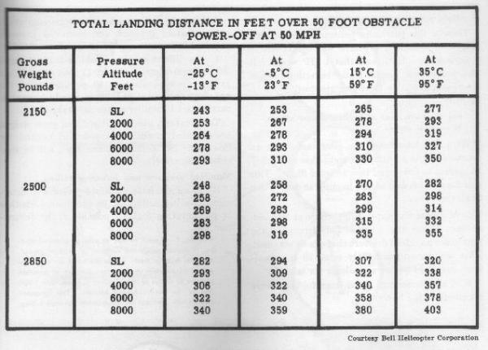
Figure 61.- Landing distance chart.
Figure 61 illustrates the type of chart that is used to compute the total landing distance over a 50-foot obstacle for one model of helicopter. The steps for using this chart are exactly the same as those listed previously for the takeoff distance chart. Notice that the total landing distance does not vary as much as the total takeoff distance (fig. 58) with equal variations in gross weight, altitude, or temperature. These charts apply to the same helicopter.
We learned earlier that the total weight of a helicopter is the first force that must be overcome before flight is possible. Lift is the force that is needed to overcome or balance this total weight. It is easily seen that the greater the gross weight of the helicopter, the more lift that is required to hover. The amount of lift available is dependent upon the angle of attack at which the rotor blades can operate and still maintain required rotor RPM. The angle of attack at which the blades can operate at required rotor RPM is dependent upon the amount of power available. Therefore, the heavier the gross weight, the greater the power required to hover and for flight in general, and the poorer the performance of the helicopter since less reserve power is available (fig. 62); or, to state it another way, the heavier the gross weight, the lower the hovering ceiling.
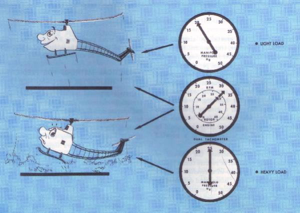
Figure 62.- Heavy loads (high gross weights) decrease
helicopter performance.
A study of the hovering ceiling chart
(fig. 56) reveals the following
interesting information for one helicopter, and is fairly typical for all
helicopters (with unsupercharged engines). At 60° F. in dry air, the
hovering ceiling for gross weights of 1,300, 1,400, 1,500, and 1,600 pounds
are 9,400 feet, 7,400 feet, 5,900 feet and 4,300 feet, respectively. An
increase of 300 pounds in gross weight decreases the hovering ceiling by
more than half. At gross weights of 1,300, 1,400, 1,500, and 1,600 pounds
at a temperature of 100° F. in air with a relative humidity of 80
percent the hovering ceilings are 6,100 feet, 4,400 feet, 2,900 feet, and
1,300 feet, respectively. In the latter case, an increase of 300 pounds in
gross weight reduces the hovering ceiling by almost 80 percent. A
comparison of the two examples illustrates vividly the reduction in
performance brought about by a combination of heavy gross weight and high
density altitudes.
Of the three major factors affecting the performance
of a helicopter at high elevations (density altitude, wind, and gross
weight), the pilot can control only the gross weight. It should be obvious
that the gross weight carried on any flight must be considered - not only
for takeoff under the existing density altitude, wind conditions, and power
available at point of departure, but also under the expected density
altitude, wind conditions, and power available at the landing destination.
Smaller amounts of fuel may be carried to improve performance or to
increase useful load. It must be remembered, however, that this
necessitates a sacrifice in range.
The importance of loading a helicopter within the
approved center-of-gravity limits, and the ill effects on performance if
this is not properly accomplished, have been discussed in the preceding
chapter.
We have seen earlier that when the horizontal airspeed of the helicopter reaches approximately 15 miles per hour, an abrupt increase in lift is experienced. This we call effective translational lift. Actually, from the moment the helicopter begins forward flight, translational lift is present, but is not very apparent or effective under about 15 miles per hour.
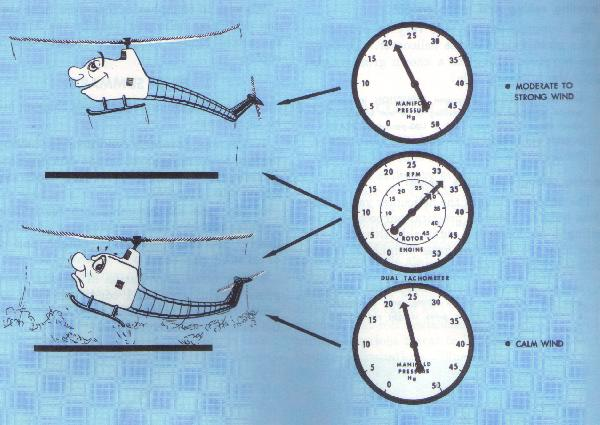
Figure 63.- Calm wind reduces helicopter hovering
performance.
Translational lift is created by airspeed, not
groundspeed. Therefore, translational lift is also present when the
helicopter is hovering in a wind. If the wind velocity is 15 miles per
hour or more, the helicopter will be experiencing effective translational
lift in a hover. Due to this increased lift, less power will be required
to hover than would be required for hovering in a no wind condition
(fig. 63); or, a greater gross weight
could be carried when takeoff is to be made in a wind exceeding 15 miles
per hour than could be made in a no-wind condition.
No-wind conditions increase the amount of power
necessary to hover, or require that a lighter load be carried. Thus,
no-wind conditions reduce helicopter performance. Since wind decreases
the power required for hovering, or permits taking off or landing with
greater loads, helicopter performance is improved. If the wind exceeds 15
miles per hour, performance is improved considerably; however, wind gusts
over 30 to 35 miles per hour may tend to destroy the additional lift
obtained between 15 and 30 miles per hour.
Certain practical methods for predicting helicopter performance were developed through engineering and flight tests for a particular model helicopter used by the Army. These practical methods for this particular helicopter are given in this handbook to give the reader a clearer understanding of factors influencing helicopter performance, and sound principles on which to base flight decisions. We wish to emphasize the fact that these rules are for a particular helicopter used by the Army and the actual figures will apply only to this particular helicopter. Even though such practical aids are developed for a helicopter, they should not be used as substitutes for experience and good judgment.
Tests on this particular helicopter showed that 1
inch of manifold pressure was equivalent to 6 horsepower (HP), and that
1 HP would lift 13.5 pounds of weight while hovering. When combined, these
two facts give rise to this practical rule:
Rule No. 1 - One inch of manifold pressure will lift 80 pounds of payload.
With this knowledge, the pilot can obtain an estimate
of the additional weight that can safely be carried to hover and then
enter flight. This rule may be applied before landing at destination in
this manner:
1. Momentarily, apply full throttle at 100 feet, or less,
above the ground and determine the maximum manifold pressure that can be
obtained. This will be approximately equal to the maximum manifold pressure
available for takeoff.
2. While hovering, check manifold pressure required for
the hover.
3. Find the difference between maximum available manifold
pressure and manifold pressure required to hover.
4. The difference in manifold pressure changed into its
equivalent in weight (1 inch of manifold pressure is equivalent to 80
pounds) gives the approximate additional payload which can be carried to
lift to a hover for safe takeoff.
Temperature, winds, altitude, and gross weight are included in the above practical method for this particular helicopter, and need not be considered separately.
Manifold pressure and hovering ceiling
By using available manifold pressure to determine
hovering ceiling, a pilot can predict whether or not hovering flight is
possible at the destination.
Rule No. 2 - If wind velocity at point of intended landing
is approximately the same as at point of takeoff, and the
flight is made within the same air mass (no radical temperature
change), for each inch of manifold pressure in excess of that
required to hover, add 1,00 feet to the point-of-takeoff
altitude. This computed altitude will represent the approximate
hovering ceiling.
This practical rule may be applied as follows:
1. Check manifold pressure at a normal hover prior
to departure.
2. While hovering, momentarily apply full throttle
and note the maximum manifold pressure available.
3. The difference in these two manifold pressure
reading is equivalent to 1,000 feet altitude per inch of excess manifold
pressure. This additional altitude added to the point-of-takeoff altitude
will give the maximum altitude (above sea level) at which the helicopter
may be hovered (in ground effect).
In winds from 0 to 15 miles per hour, the hovering
ceiling of the helicopter will increase about 100 feet for each mile per
hour of wind. In windspeed from about 15 MPH to 26 MPH, the hovering
ceiling will increase about 350 feet for each mile per hour of wind.
Rule No. 3 - The payload may be increased 8 pounds
for each mile per hour of wind from 0 to 15 miles per
hour, or may be increased 28 pounds for each mile
per hour of wind from 15 MPH to 26 MPH.
Hovering and skid height
The hovering altitude over level terrain for this
particular helicopter is ideal with a skid clearance of approximately 4
feet (height of skid above the ground). Variable hovering altitudes, due
to obstacles or rough terrain, have a decided effect on helicopter
performance in determining hovering ceiling and payload. These effects
are best estimated as follows:
Rule No. 4 - (1) To hover under 4 feet, add 300 feet
to the hovering ceiling or 24 pounds to the payload
for each 6 inches of decrease in skid height from the
4-foot hover. (2) To hover between 4 feet and 10 feet,
subtract 300 feet from the hovering ceiling or 24
pounds from the payload for each foot of increase in
skid height.
Hovering ceiling and gross weight
The hovering ceiling will vary in proportion to the
gross weight of the helicopter. To determine hovering ceiling for a known
gross weight, apply the following rule:
Rule No. 5 - (1) A 100-pound REDUCTION in gross
Service ceiling and gross weight
weight increases hovering ceiling in or out of
ground effect above 1,300 feet. (2) A 100-pound
INCREASE in gross weight decreases hovering
ceiling about 1,300 feet.
The service ceiling of the helicopter varies with
gross weight. (For all practical purposes, service ceiling is the maximum
obtainable altitude.) To determine the effects of gross weight on service
ceiling, apply the following rule:
Rule No. 6 - A 100-pound DECREASE in gross weight
adds 800 feet to the service ceiling, and, conversely,
a 100-pound INCREASE in gross weight reduces the
service ceiling 800 feet.
We wish to reemphasize that these rules are for one particular helicopter used by the Army and the actual figures will apply only to this helicopter.
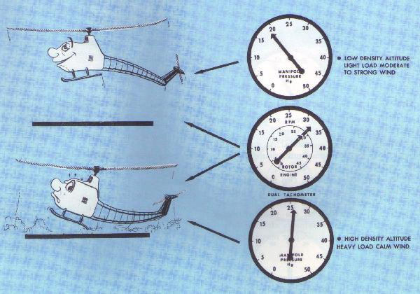
Figure 64.- The most adverse conditions for helicopter
performance include the combination of high density altitude, heavy load
(high gross weight) and calm wind.
A thumbnail summary of this chapter might be as
follows:
1. The most favorable conditions for helicopter
performance are the combination of a low-density altitude, light gross
weight, and moderate to strong wind (fig, 64).
2. The most adverse conditions for helicopter performance
are the combination of a high density altitude, heavy gross weight, and
calm or no wind (fig. 64).
3. Any other combination of density altitude, gross
weight, and wind conditions falls somewhere between the most adverse
conditions and the most favorable conditions.
{kind=link}
{kind=link}
{kind=link}
{kind=link}
{kind=link}
{kind=link}
{kind=link}
{kind=link}
{kind=link}
{kind=link}
{kind=link}
{kind=link}